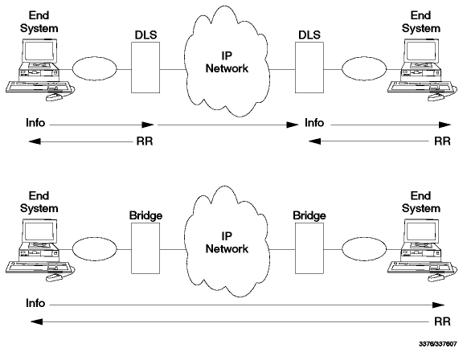

Table of Contents
Table of Contents  Network
Tunnels - The Difficult Approach
Network
Tunnels - The Difficult ApproachTable of Contents Network
Tunnels - The Difficult Approach
Data Link Switching (DLSw) was issued by IBM in March 1993 and is documented in RFC number 1795. Its state is informational.
Data Link Switching is a forwarding mechanism for the IBM SNA and IBM NetBIOS protocols. It does not provide full routing, but instead provides switching at the data link layer and encapsulation in TCP/IP for transport over the Internet. This Switch-to-Switch Protocol (SSP) is used between IBM 6611 Network Processors and/or IBM 2210 Nways Multiprotocol Routers. Routers of other vendors can participate if they comply to the above RFC or without DLSw capability as intermediate routers because the DLSw connection exists only between the two end routers.
DLSw was developed to provide support for SNA and NetBIOS in multiprotocol routers. Since SNA and NetBIOS are basically connection-oriented protocols, the data link control procedure that they use on the LAN is IEEE 802.2 Logical Link Control (LLC) Type 2. DLSw also accommodates SNA protocols over WAN links via the SDLC protocol.
IEEE 802.2 LLC Type 2 was designed with the assumption that the network transit delay would be small and predictable (for example a local LAN). Therefore LLC uses a fixed timer for detecting lost frames. When bridging is used over wide area lines (especially at lower speeds), the network delay is larger and can vary greatly based upon congestion. When the delay exceeds the timeout value LLC attempts to retransmit. If the frame is not actually lost, only delayed, it is possible for the LLC Type 2 procedures to become confused, and as a result, the link is eventually taken down.
Given the use of LLC Type 2 services, DLSw addresses the following bridging problems:
NetBIOS also makes extensive use of datagram services that use LLC Type 1.
In this case, DLSw addresses the last two problems in the above list. The
principal difference between DLSw and bridging is that DLS terminates the data
link control whereas bridging does not.
Figure - DLSw Compared to Bridging
illustrates this difference based upon two end systems operating with LLC Type
2 services.

Figure: DLSw Compared to Bridging
In traditional bridging, the data link control is end-to-end. DLSw terminates the LLC Type 2 connection at the switch. This means that the LLC Type 2 connections do not cross the wide area network. The DLS multiplexes LLC connections onto a TCP connection to another DLS. Therefore, the LLC connections at each end are totally independent of each other. It is the responsibility of the data link switch to deliver frames that it has received from an LLC connection to the other end. TCP is used between the data link switches to guarantee delivery of frames.
As a result of this design, LLC timeouts are limited to the local LAN (for example they do not traverse the wide area). Also, the LLC Type 2 acknowledgments (RRs) do not traverse the WAN, thereby reducing traffic across the wide area links. For SDLC links, polling and poll response occurs locally, not over the WAN. Broadcast of search frames is controlled by the data link switches once the location of a target system is discovered. Finally, the switches can now apply back pressure to the end systems to provide flow and congestion control.
DLSw uses LAN addressing to set up connections between SNA systems. SDLC attached devices are defined with MAC addresses to enable them to communicate with LAN-attached devices. For NetBIOS systems, DLSw uses the NetBIOS name to forward datagrams and to set up connections for NetBIOS sessions. For circuit establishment, SNA systems send TEST (or in some cases, XID) frames to the null (x'00') SAP. NetBIOS systems have an address resolution procedure, based upon the Name Query and Name Recognized frames, that is used to establish an end-to-end circuit.
Since DLSw may be implemented in multiprotocol routers, there may be situations where both bridging and switching are enabled. SNA frames can be identified by their link SAP. Typical SAP values for SNA are x'04', x'08', and x'0C'. NetBIOS always uses a link SAP value of x'F0'.
For further details please refer to RFC 1795.
 IP:
The Next Generation (IPng)
IP:
The Next Generation (IPng)